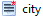
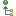
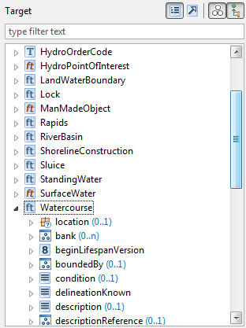
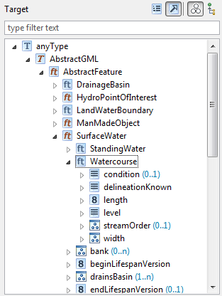

The Schema Explorer allows you to view the structure of the source (left) and the target (right) schema in various ways and enables the definition of mappings between the elements of the schemas.
The top level elements in the schema explorer are the classes/types defined in the schema, which may be used in the mapping. When loading a schema hale studio tries to determine this automatically, but you can also define manually, which types are relevant for your mapping.
Each type has a set of properties. A property either has an associated property type or is a group of properties. Properties with a property type have a structure according to that type's definition, they may have a value and properties of themselves. Select a schema element and open the Properties view to display detailed information about it. For XML schemas this may include a description of the schema element, as provided as documentation in the schema.
Please note that the Properties view is a view for displaying information on any kind of selected object and doesn't refer to the term property as used in the context of schemas.
The Properties view can also be used to view the values occurring within the selected property. Navigate to the schema element which contains values in the Schema explorer and select the Occurring values tab in the Properties view. Click the icon with arrows to display the unique values occurring in the data. The numbers in brackets indicate the frequency of occurrence.
In the Schema Explorer, additionally to the element name, the occurrence of a property element is displayed - provided that it doesn't occur exactly once. The blue text after the element name states the minimum and maximum occurrence of a property.
If the name of a schema element is displayed in brackets, this indicates that the element represents a context defined on the original schema element. Depending on the nature of the context, a description may be displayed (brown colored text). The image below contains a small example, where two condition contexts are defined on a property.
The icon displayed for a schema element represents its classification and may be augmented with additional information, e.g. pointing out that a property is mandatory. For a detailed listing and more detailed information about how schema elements are represented in the application, please have a look at the Schema elements reference.
In addition, the background color of a schema element indicates its mapping status:
|  | Not mapped |
| Mapped explicitly with a relation | |
| Mapped implicitly due to the mapping of a sub-property | |
| Value assignment independent of the source schema |
There are light and dark variants of the background colors for properties. The darker background stands for a direct mapping of the property, while properties with the light background color are mapped indirectly through inheritance.
The tool bar atop each schema viewer allows to filter the schema elements according to their classification. You can also enter a filter string, to search for types or properties with certain names.
In the Schema Explorer you can choose between two different modes for displaying the types contained in the schemas:
| All types are displayed in a flat list, children of types are properties of the type. | |
| Types are displayed by the inheritance hierarchy. Sub-types are children of their super-types, in addition to the super-types' properties. |
Using the filter buttons in the view bar, you can show or hide certain properties in the schema types:
| Properties that have values in the currently loaded data | |
|  | Properties that are inherited from a super type. |
Hiding the inherited properties, in combination with displaying the types according to their hierarchy, is very useful for analyzing the type hierarchy. The images below show the INSPIRE HydroPhysicalWaters schema with the types as list (left) and the types arranged according to the hierarchy and only displaying properties that are not inherited (right).
|  |  |